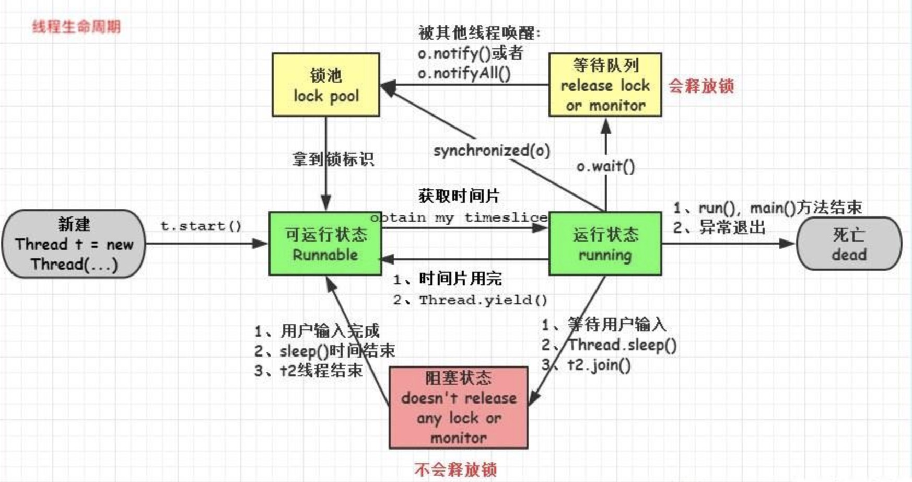

基础概念
进程
是程序的一次执行过程，是系统运行程序的基本单位，因此进程是动态的。
线程
是操作系统能够进行运算调度的最小单位。一条线程指的是进程中一个单一顺序的控制流，一个进程中可以并发多个线程，每条线程并行执行不同的任务。
线程分类
分为用户线程和守护线程。
线程上下文切换
对于单核CPU来说（对于多核CPU，此处就理解为一个核），CPU在一个时刻只能运行一个线程，当在运行一个线程的过程中转去运行另外一个线程。
线程优先级
每一个线程都是有优先级的，高优先级的线程在运行时会具有优先权，但这依赖于线程调度的实现，这个实现是和操作系统的。
线程饥饿
如果一个线程因为CPU时间全部被其他线程抢走而得不到CPU运行时间，这种状态被称之为“饥饿”。
原因
- 高优先级线程吞噬所有的低优先级线程的 CPU 时间。
- 线程被永久堵塞在一个等待进入同步块的状态，因为其他线程总是能在它之前持续地对该同步块进行访问。
- 线程在等待一个本身(在其上调用 wait())也处于永久等待完成的对象，因为其他线程总是被持续地获得唤醒。
生命周期
线程的生命周期包含5个阶段，包括：新建、就绪、运行、阻塞、销毁。
- 新建：就是刚使用new方法，new出来的线程
- 就绪：就是调用线程的start()方法后，这时候线程处于等待CPU分配资源阶段，谁先抢的CPU资源，谁开始执行
- 运行：当就绪的线程被调度并获得CPU资源时，便进入运行状态，run方法定义了线程的操作和功能
- 阻塞：在运行状态的时候，可能因为某些原因导致运行状态的线程变成了阻塞状态，比如sleep()、wait()之后线程就处于了阻塞状态，这个时候需要其他机制将处于阻塞状态的线程唤醒，比如调用notify或者notifyAll()方法。唤醒的线程不会立刻执行run方法，它们要再次等待CPU分配资源进入运行状态
- 销毁：如果线程正常执行完毕后或线程被提前强制性的终止或出现异常导致结束，那么线程就要被销毁，释放资源

如何使用
通过继承Thread来创建
|
|
通过实现Runnable接口来创建
|
|
通过线程池来创建
|
|